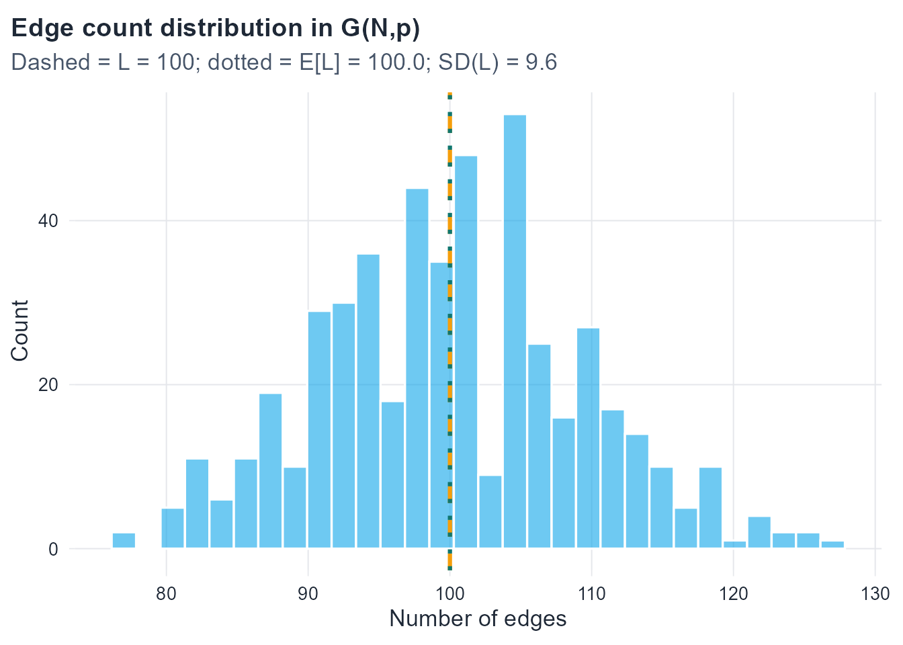
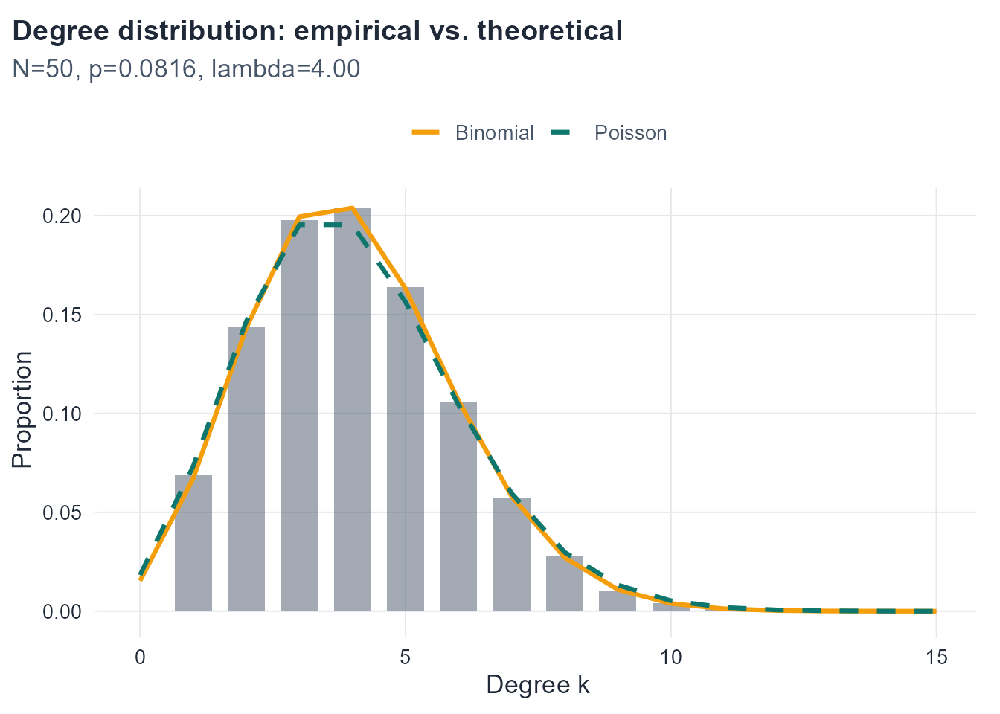
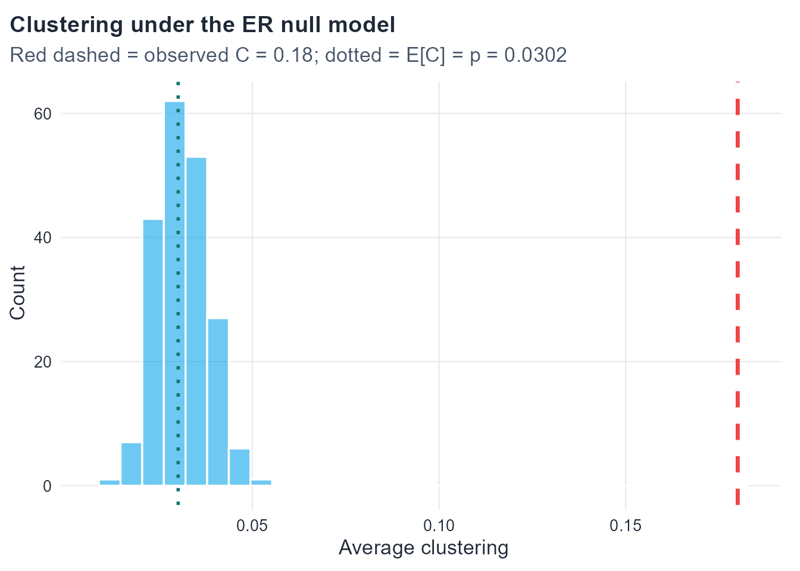

All three two-edge graphs share the same probability 4/27 — they are equiprobable within G(3,p). However 4/27 \neq 1/3, so the two models assign different probabilities to the same graph. In G(N,L) the total probability mass is concentrated on graphs with exactly L edges; in G(N,p) it is spread over all 2^K graphs.
For p \in (0,1), the ratio p/(1-p) \neq 1 (it equals 1 only when p = 1/2, but even then, if L_1 \neq L_2 the exponent is nonzero so the ratio is not 1). Wait — if p = 1/2 then p/(1-p) = 1, so P(G_1) = P(G_2). Let us be more careful.
For p \neq 1/2: p/(1-p) \neq 1, so (p/(1-p))^{L_1-L_2} \neq 1 whenever L_1 \neq L_2, giving P(G_1) \neq P(G_2).
For p = 1/2: P(G) = (1/2)^K for every graph, so P(G_1) = P(G_2) regardless of L_1 and L_2.
The correct statement is therefore: P(G_1) \neq P(G_2) whenever L_1 \neq L_2 and p \neq 1/2.
Part 3. When p = 1/2, every graph has probability (1/2)^K, giving a uniform distribution over all 2^K labeled simple graphs. This is the only value of p for which G(N,p) is uniform over the full space, because it is the only value making p^L(1-p)^{K-L} constant in L.
Part 4. The number of graphs in G(N,L) that contain a fixed edge \{u,v\} is the number of ways to choose the remaining L-1 edges from the K-1 remaining possible edges:
\binom{K-1}{L-1}.
Since all \binom{K}{L} graphs are equally likely, the probability that \{u,v\} is present is
So in G(N,L), any fixed edge is present with probability L/K = L/\binom{N}{2}.
3.2 Exercise 2. Expected degree: derivation and inversion
Part 1.
Via \mathbb{E}[L]: Each of the K = \binom{N}{2} edges is independently present with probability p, so L \sim \mathrm{Bin}(K, p) and \mathbb{E}[L] = pK = p\binom{N}{2} = pN(N-1)/2. Then
Via a single vertex: Fix vertex v. It has N-1 potential neighbors, each connected to v independently with probability p. So k_v \sim \mathrm{Bin}(N-1, p) and \mathbb{E}[k_v] = p(N-1). Since all vertices are statistically equivalent, \mathbb{E}[\langle k \rangle] = \mathbb{E}[k_v] = p(N-1).
Both routes give p(N-1). ✓
Part 2. Since \langle k \rangle = 2L/N and L \sim \mathrm{Bin}(K, p):
The standard deviation is \mathrm{SD}(\langle k \rangle) = \sqrt{2(N-1)p(1-p)/N}. The relative fluctuation is
\frac{\mathrm{SD}(\langle k \rangle)}{\mathbb{E}[\langle k \rangle]}
= \frac{\sqrt{2(N-1)p(1-p)/N}}{p(N-1)}
= \frac{1}{p(N-1)}\sqrt{\frac{2p(1-p)(N-1)}{N}}
\sim \frac{1}{\lambda}\sqrt{\frac{2\lambda(1-p)}{N}}
\to 0
as N \to \infty with \lambda = p(N-1) fixed (since p \to 0 and the numerator \sim \sqrt{2\lambda/N} \to 0). The average degree concentrates tightly around its expectation in large graphs — a law of large numbers effect for \langle k \rangle.
Part 3. For a network with N = 1000 vertices and observed average degree \langle k \rangle = 6, match the ER model by setting
p = \frac{\langle k \rangle}{N-1} = \frac{6}{999} \approx 0.006.
Since N is large and p is small with \lambda = p(N-1) = 6 of moderate size, the sparse regime conditions are satisfied. The degree distribution will be well approximated by \mathrm{Poisson}(6): the binomial \mathrm{Bin}(999, 0.006) is very close to Poisson with mean 6 because each of the 999 potential edges has a small probability of being present.
3.3 Exercise 3. Degree distribution: properties and moments
So \mathrm{Var}(k) \to \lambda = \mathbb{E}[k]. This reflects the defining property of the Poisson distribution: its variance equals its mean. In the sparse limit, the binomial inherits this property because (1-p) \to 1, making \mathrm{Var}(k) = p(1-p)(N-1) \approx p(N-1) = \lambda.
Part 4. The student’s argument is wrong because equal means do not imply equal distributions. Two distributions with the same mean can differ in variance, skewness, tail behavior, and every other moment. A concrete example where the two give different predictions: the probability of degree 0.
Binomial: P(k=0) = (1-p)^{N-1}.
Poisson: P(k=0) = e^{-\lambda}.
In the sparse regime, (1-p)^{N-1} = (1 - \lambda/(N-1))^{N-1} \to e^{-\lambda}, so they agree asymptotically. But for finite N, (1-p)^{N-1} \neq e^{-\lambda} exactly. The binomial also has finite support \{0,\ldots,N-1\} while the Poisson has infinite support, so they differ on P(k \geq N): the binomial assigns probability 0; the Poisson assigns a (tiny but positive) probability.
3.4 Exercise 4. The Poisson limit
Part 1. Starting from the exact binomial probability (see Bollobás (2001) for a rigorous treatment of the limit):
P(2) = \binom{N-1}{2} p^2 (1-p)^{N-3}, \qquad p = \frac{\lambda}{N-1}.
\frac{(N-1)(N-2)\cdots(N-k)}{(N-1)^k} = \prod_{j=0}^{k-1}\left(1-\frac{j}{N-1}\right) \to 1. Applied result: for fixed k, each factor tends to 1 as N\to\infty.
\left(1-\frac{\lambda}{N-1}\right)^{N-1} \to e^{-\lambda}. Applied result: the standard limit \lim_{m\to\infty}(1 - x/m)^m = e^{-x} with m = N-1, x = \lambda.
\left(1-\frac{\lambda}{N-1}\right)^{-k} \to 1. Applied result: the base tends to 1 and the exponent k is fixed, so the expression tends to 1^{-k} = 1.
Part 3. If \mu = pN is fixed, then p = \mu/N and \lambda = p(N-1) = \mu(N-1)/N = \mu(1 - 1/N) \to \mu. So fixing \mu = pN is asymptotically equivalent to fixing \lambda = p(N-1) — both give Poisson convergence, with mean parameter \mu. For finite N, the approximation quality differs slightly: using \lambda = p(N-1) is slightly more accurate because it matches the exact binomial mean p(N-1).
Part 4. The Poisson approximation requires p \to 0 and N \to \infty with \lambda = p(N-1) finite. It fails when:
p is bounded away from 0 (dense regime, e.g., p = c for constant c > 0): the binomial \mathrm{Bin}(N-1,p) has variance p(1-p)(N-1) \approx c(1-c)N \to \infty and is not well approximated by any fixed Poisson.
\lambda \to \infty (growing mean regime, e.g., p = c\log N / N): the degree distribution is still approximately normal by the CLT, not Poisson.
Finite N with p not small: the approximation error is of order p, so it is non-negligible whenever p is not much less than 1.
3.5 Exercise 5. Clustering: proof and interpretation
Part 1. Full proof of \mathbb{E}[C_i] = p.
Fix vertex i and condition on its degree k_i = k and on the identity of its k neighbors, call them S = \{u_1, \ldots, u_k\}. The local clustering coefficient is
C_i = \frac{L_i}{\binom{k}{2}},
where L_i = \sum_{1 \leq a < b \leq k} \mathbf{1}[\{u_a, u_b\} \in E] counts edges among neighbors.
Key independence step: In G(N,p), all edges are mutually independent. The edges within S (i.e., \{u_a, u_b\} for a \neq b) are independent of the edges connecting S to i (i.e., \{i, u_j\}), because they are distinct edge-slots each decided by an independent Bernoulli trial. Therefore, conditioning on S does not change the distribution of edges within S: each is still present with probability p.
\mathbb{E}[C_i \mid k_i = k,\, S] = \frac{\binom{k}{2}p}{\binom{k}{2}} = p.
This holds for every value of k \geq 2 and every neighborhood S. Taking iterated expectations:
\mathbb{E}[C_i] = \mathbb{E}\!\left[\mathbb{E}[C_i \mid k_i, S]\right] = \mathbb{E}[p] = p.
Averaging over vertices: \mathbb{E}[\bar{C}] = \frac{1}{N}\sum_i \mathbb{E}[C_i] = p. \square
Part 2. In the described model, edges are positively dependent: the presence of \{u,v\} increases the probability of edges \{u,w\} and \{v,w\}. This means that conditional on knowing two neighbors of i are connected to i, they are more likely to also be connected to each other — because the same mechanism that formed \{i,u\} and \{i,v\} also favours \{u,v\}.
Formally, \mathbb{E}[L_i \mid k_i] > \binom{k_i}{2} p, so \mathbb{E}[C_i] > p. The model generates higher clustering than the ER baseline at the same edge density. This is precisely what is observed in social networks: knowing two people both know you makes it more likely they know each other (triadic closure) (Newman, 2010; Watts & Strogatz, 1998). The ER model’s \mathbb{E}[\bar{C}] = p result breaks down as soon as edge independence is violated.
Part 3. Each triangle is determined by a set of three vertices \{i,j,k\}; all three edges must be present. Since edges are independent with probability p:
\mathbb{E}[\text{triangles}] = \binom{N}{3} p^3.
A connected triple (open triangle, or path of length 2) centered at vertex i requires both edges \{i,u\} and \{i,v\} to be present. The expected number of connected triples is
\mathbb{E}[\text{triples}] = N \cdot \binom{N-1}{2} p^2 = \frac{N(N-1)(N-2)}{2} p^2.
The global clustering coefficient (ratio of closed to open triples) is
Both the local average and the global ratio give p — consistent with \mathbb{E}[\bar{C}] = p.
Part 4.\mathbb{E}[\bar{C}] = p grows linearly in p. \mathbb{E}[\langle k \rangle] = p(N-1) also grows linearly in p. Their ratio is
\frac{\mathbb{E}[\bar{C}]}{\mathbb{E}[\langle k \rangle]} = \frac{p}{p(N-1)} = \frac{1}{N-1}.
This ratio does depend on N — it decreases as the network grows. In a large sparse network, the clustering coefficient is much smaller than the average degree. Equivalently, for fixed \lambda = p(N-1): \mathbb{E}[\bar{C}] = \lambda/(N-1) \to 0 as N \to \infty. This is the key limitation of the ER model for large sparse networks: clustering vanishes even when the mean degree is held constant.
3.6 Exercise 6. Comparing G(N,L) and G(N,p) numerically
Show code
set.seed(42)N <-50L <-100K <-choose(N, 2)p <- L / Kcat(sprintf("N = %d, L = %d, K = %d, p = %.4f\n", N, L, K, p))
ggplot(sim_gnp, aes(x=edges)) +geom_histogram(bins=30, fill=course_cols$blue, alpha=0.6, color="white") +geom_vline(xintercept=L, color=course_cols$gold, linewidth=1.1, linetype=2) +geom_vline(xintercept=p*K, color=course_cols$teal, linewidth=1.1, linetype=3) +labs(title="Edge count distribution in G(N,p)",subtitle=sprintf("Dashed = L = %d; dotted = E[L] = %.1f; SD(L) = %.1f", L, p*K, sqrt(K*p*(1-p))),x="Number of edges", y="Count")

Distribution of edge counts across 500 G(N,p) realisations. Dashed lines mark L=100 and E[L]=pK.
The spread of the edge count distribution is governed by \mathrm{SD}(L) = \sqrt{Kp(1-p)} \approx \sqrt{100 \times 0.082} \approx 2.9. In G(N,L), every realisation has exactly L = 100 edges — the histogram would be a single spike.
Show code
# One G(N,L) graphg_gnl <-sample_gnm(N, L, directed=FALSE, loops=FALSE)cat("G(N,L) average degree: ", round(mean(degree(g_gnl)), 3), "\n")
The comparison is fair in terms of expected edge count — \mathbb{E}[L_{G(N,p)}] = pK = L — but any single G(N,p) realisation may have slightly more or fewer edges than L. The G(N,L) average degree is exactly 2L/N in every realisation; the G(N,p) average degree fluctuates around the same value.
Show code
lambda <- p * (N -1)# Pool all degrees from all simulationsall_degrees <-map_dfr(seq_len(reps), function(i) {set.seed(i) g <-sample_gnp(N, p, directed=FALSE, loops=FALSE)tibble(k=degree(g))})emp_dist <- all_degrees |>count(k, name="count") |>mutate(prop=count/sum(count))theory_dist <-tibble(k=0:(N-1)) |>mutate(binomial=dbinom(k, size=N-1, prob=p),poisson =dpois(k, lambda=lambda))ggplot() +geom_col(data=emp_dist, aes(x=k, y=prop),fill=course_cols$slate, alpha=0.5, width=0.7) +geom_line(data=theory_dist, aes(x=k, y=binomial, color="Binomial"),linewidth=1.1) +geom_line(data=theory_dist, aes(x=k, y=poisson, color="Poisson"),linewidth=1.1, linetype=2) +scale_color_manual(values=c("Binomial"=course_cols$gold,"Poisson"=course_cols$teal)) +xlim(0, 15) +labs(title="Degree distribution: empirical vs. theoretical",subtitle=sprintf("N=%d, p=%.4f, lambda=%.2f", N, p, lambda),x="Degree k", y="Proportion", color=NULL)

Empirical degree distribution across 500 G(N,p) realisations vs. Binomial and Poisson theoretical curves.
At N = 50 and p \approx 0.082, p is not very small relative to 1, so the Poisson approximation is noticeably less accurate than the exact binomial. The binomial curve fits the empirical distribution more closely. As N increases with \lambda held fixed, the two curves converge.
3.7 Exercise 7. A network diagnostic: ER as a null model
Part 1. Average degree: \langle k \rangle = 2M/N = 1200/200 = 6. Fit p by matching this to p(N-1):
p = \frac{\langle k \rangle}{N-1} = \frac{6}{199} \approx 0.0302.
Part 2.
\mathbb{E}[\bar{C}] = p \approx 0.0302.
The maximum degree in G(N,p) is approximately \lambda + c\sqrt{\lambda \log N} for a constant c — loosely, it concentrates around \lambda = 6 with fluctuations of order \sqrt{\log N}. A rough upper bound via the Poisson approximation: the probability that any vertex has degree \geq d is approximately N \cdot P(\mathrm{Poisson}(6) \geq d). For d = 15: P(\mathrm{Poisson}(6) \geq 15) \approx 0.0003, so \mathbb{E}[\text{vertices with } k\geq15] \approx 0.06 — unlikely to observe even one. The expected maximum degree is around 12–14 for N=200, \lambda=6.
P(k=0) \approx e^{-\lambda} = e^{-6} \approx 0.0025, so about 0.5 isolated vertices expected.
cat(sprintf("P(k=0) under G(N,p) = %.4f\n", dpois(0, 6)))
P(k=0) under G(N,p) = 0.0025
Show code
reps <-200sim_null <-map_dfr(seq_len(reps), function(i) { g <-sample_gnp(N_obs, p_fit, directed=FALSE, loops=FALSE)tibble(clustering =transitivity(g, type="average"),max_degree =max(degree(g)) )})ggplot(sim_null, aes(x=clustering)) +geom_histogram(bins=30, fill=course_cols$blue, alpha=0.6, color="white") +geom_vline(xintercept=C_obs, color="#EF4444", linewidth=1.2, linetype=2) +geom_vline(xintercept=p_fit, color=course_cols$teal, linewidth=1.0, linetype=3) +labs(title="Clustering under the ER null model",subtitle=sprintf("Red dashed = observed C = %.2f; dotted = E[C] = p = %.4f", C_obs, p_fit),x="Average clustering", y="Count")

Distribution of average clustering across 200 G(N,p) realisations. The observed value 0.18 (red dashed line) falls far in the tail.
Part 3 interpretation. The observed \bar{C} = 0.18 falls far in the right tail of the ER null distribution — in practice, it is likely not achieved in any of the 200 simulated realisations. This is strong evidence that the real network has more triangle structure than independent edge formation can produce. The excess clustering suggests a mechanism such as triadic closure (friends of friends tend to become friends) or community structure (vertices cluster into dense groups), neither of which is captured by the ER model.
Part 4.
Show code
# Analytical probability of degree >= 25 under Poisson(6)p_geq25_poisson <-ppois(24, lambda=6, lower.tail=FALSE)# Under Binomial(199, p_fit)p_geq25_binomial <-pbinom(24, size=N_obs-1, prob=p_fit, lower.tail=FALSE)cat(sprintf("P(k >= 25) Poisson(6): %.6f\n", p_geq25_poisson))
cat(sprintf("Expected vertices with k>=25: %.4f\n", N_obs * p_geq25_binomial))
Expected vertices with k>=25: 0.0000
Show code
# Simulated maximum degreescat(sprintf("\nSimulated max degree: mean = %.1f, max over reps = %d\n",mean(sim_null$max_degree), max(sim_null$max_degree)))
Simulated max degree: mean = 13.5, max over reps = 18
The probability of observing a vertex with degree \geq 25 under G(N,p) is essentially zero — far below 1/N, so the expected count of such vertices is negligible. Yet the real network has such a vertex. This is a hallmark of heavy-tailed degree distributions: real networks (particularly those exhibiting preferential attachment, as in the Barabási–Albert model studied in Chapter 5) contain high-degree hubs that the ER model cannot account for (Albert & Barabási, 2002; Barabási & Albert, 1999). The Poisson (and binomial) degree distributions have exponentially decaying tails, making extreme degrees very rare; real networks often have power-law tails (Clauset et al., 2009), making them far more common.
Albert, R., & Barabási, A.-L. (2002). Statistical mechanics of complex networks. Reviews of Modern Physics, 74(1), 47–97. https://doi.org/10.1103/RevModPhys.74.47
Clauset, A., Shalizi, C. R., & Newman, M. E. J. (2009). Power-law distributions in empirical data. SIAM Review, 51(4), 661–703. https://doi.org/10.1137/070710111
Newman, M. E. J. (2010). Networks: An introduction. Oxford University Press.
Watts, D. J., & Strogatz, S. H. (1998). Collective dynamics of ’small-world’ networks. Nature, 393(6684), 440–442. https://doi.org/10.1038/30918